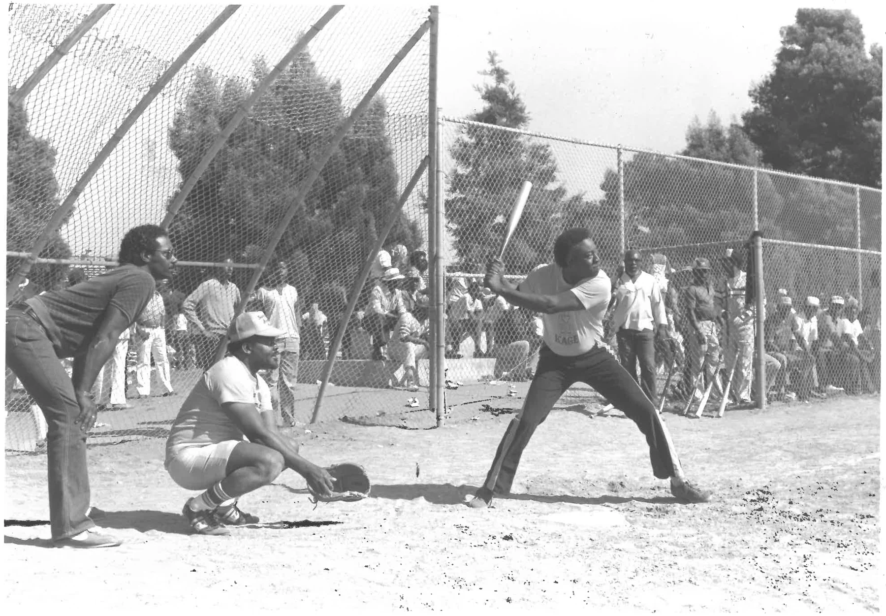

Date and place under research
Community Baseball
Players and spectators at an outdoor ball field. The date, place, and participants remain unidentified.
Community & Civic Life
Sport, public celebrations, and neighborhood gatherings in Oakland and the surrounding area.
The collection
At an outdoor ball field, players take turns at bat while spectators watch and people gather near the fence. The photographs include both the action of the game and the interactions around it. Other community gatherings and parades can be presented here as their photographic groupings are reviewed.
The photographs

Date and place under research
Players and spectators at an outdoor ball field. The date, place, and participants remain unidentified.